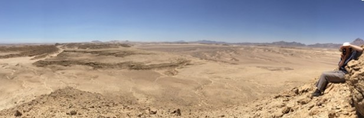
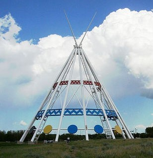
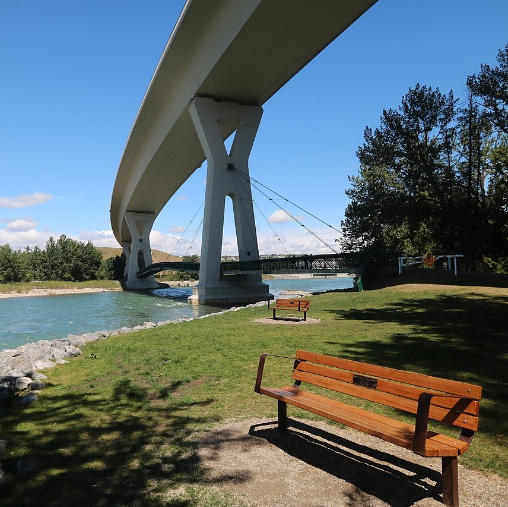
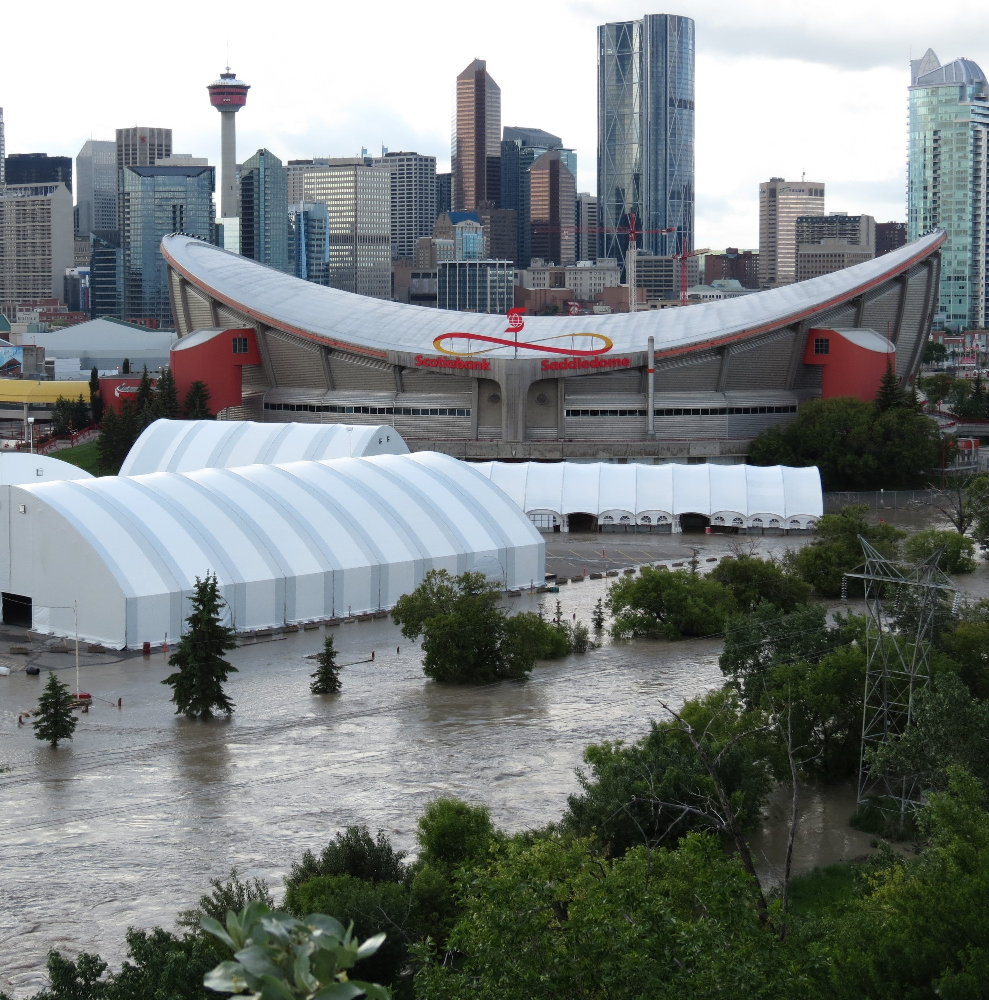

2024
Prior to specializing in GIS, I spent over a decade as a geoscientist in both the resource sector and in science
communication and outreach. I am currently expanding my skills in spatial datasets, analysis and mapping as
a practicum student of SAIT's Bachelor of Applied Technology Geographic Information Systems.

My work philosophy is focused on practical solutions, efficient design, and timely project completion. I generate
support for value-adding projects through visually appealing and concise maps, and improve analysis by embracing
new software and methodologies. My aim is to support the goals of my team and clients through a growth mindset.

Optimal tree planting sites were identified using multi-criteria spatial analysis. Criteria were: removal of utility setbacks, proximity to playgrounds and greenspaces, minimal slope, sparse tree canopy, and proximity to hard surface roadways and pathways for water truck access.
Sentinel-1 radar was chosen as a 'soft' indicator of relative soil moisture for grass and turf areas. This data provides a singular approach to account for drainage, strength of incident solar radiation due to aspect, and site-specific soil structure and composition.
Photo credit: Jeffmilner from Wikimedia Commons
Urban tree survivability is influenced by many variables, including available rooting area. By applying multi-criteria spatial analysis to both vaulted and non-vaulted trees, and fine tuning for genus specific characteristics, the percentage of optimal rooting area was calculated.
By comparing the available rooting area to tree condition rating, modest impacts were observed for young trees one to five years after planting.
Photo credit: Bernard Spragg. NZ from Wikimedia Commons

In preparation for the City of Calgary's migration to Javascript API 4.x, the capstone focused on how City of Calgary's Map Gallery might be enhanced to improve the user experience. An Experience Builder prototype re-envisioned several of the current Map Gallery's standalone map products into a themed Summer Recreation Guide.
Our team received 1st prize for the capstone presentation and 2nd placing for the technical poster.
Photo credit: davebloggs007 from Wikimedia Commons

My prior use of flood data with Calgary Parks Environmental Education inspired a GIS-Based Flood Insurance Model as the project's focus.
One personal highlight of the project was applying network analysis to ascertain effectiveness of emergency response.
Photo credit: RAF-YYC from Wikimedia Commons

Image credit: Globcal International from Wikimedia Commons